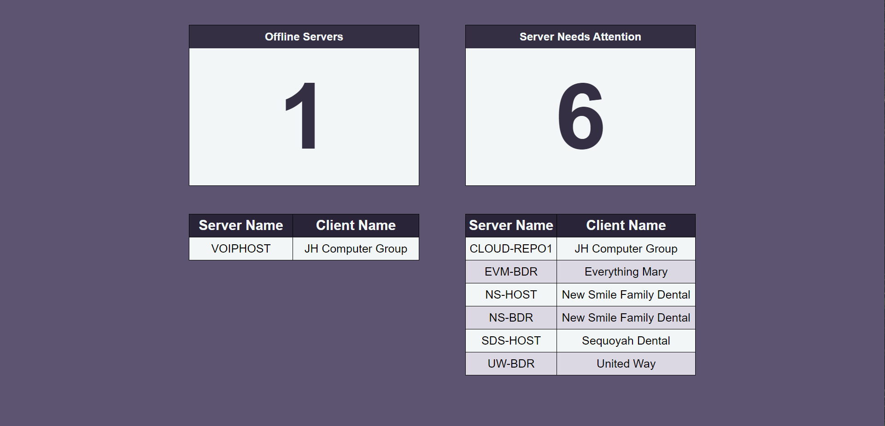
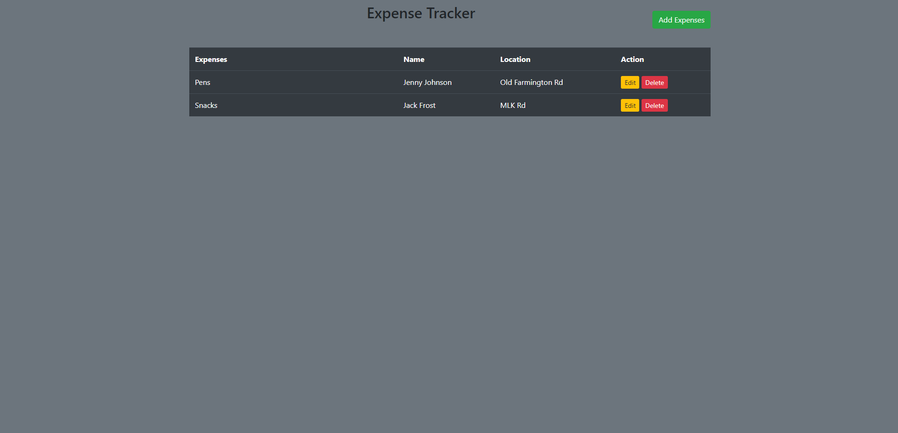

Server Dashboard
This project uses HTML, CSS, Python and a line of Javascript to create a server dashboard. This dashboard utilizes the NinjaRMM API with the use of Flask to create a live webpage that helps keep the client aware of server issues. The dashboard will populate offline servers and servers that need attention, this could be anything from hard drive failure to a RAID battery.
Real Estate Website
This project utilizes Django and a PostgreSQL database. Employees are able to add listings as desired while users can search the database for their desired listings. The website features Djangos authentication system with admin tools.

Expense Tracker
A flask application using bootstrap for styling. This application is used to keep track of inventory requests between remote centers.
